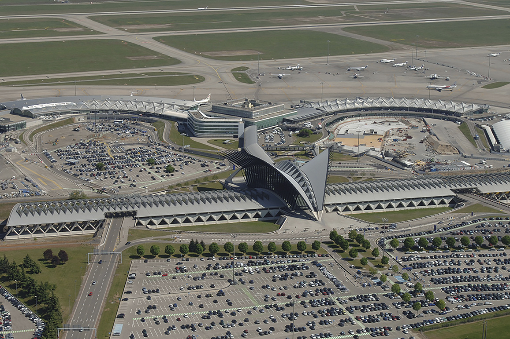
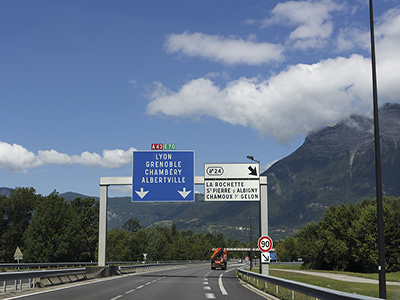
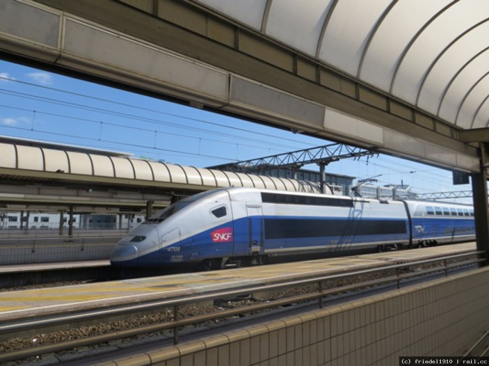

Toggle navigation
Inici
(current)
Història
(current)
Com arribar
(current)
Mou-te per Lió
(current)
Què veure?
(current)
Gastronomia
(current)
Clima
(current)
COM ARRIBAR
A Lió podem arribar tant per aire com per terra.
Per arribar per l’aire tenim l’aeroport
Saint-Exupéry
, creat en honor al famós escriptor, pilot i combatent per la llibertat
Antoine de Saint-Exupéry
. L’aeroport internacional està situat a
Colombier- Saugnieu
, a uns 25 km de Lió. Es considera el quart més important de França. Uneix la ciutat de Lió amb la majoria de capitals i grans ciutats europees.

Per arribar per terra ho podem fer amb cotxe, des de
Barcelona
o des
d’Irun
. Des de Barcelona tenim uns
640 km
i la duració del viatge seria aproximadament de 7 hores. I des d’Irun hi ha uns
860 km
i el viatge duraria més de 10 hores aproximadament. També podem anar en autobús, les línies europees (
Eurolines
) ens ofereixen anar a Lió des de Barcelona.

També per terra, tenim l’opció de viatjar en tren. A Lió hi ha tres estacions de tren:
Lyon Part-Dieu
, és una de les més transitades i amb moltes correspondències;
LyonPerrache
, situada al cor de la península (Presqu’île); i la de
Lyon Saint-Exupéry TGV
, al costat de l’aeroport, aquesta última va ser dissenyada i construïda per l’arquitecte espanyol
Juan Calatrava
. Podem arribar des de Barcelona passant per Marsella, i des d’Irun que hi ha un TGV que passa per Lió i només es triga dues hores.
